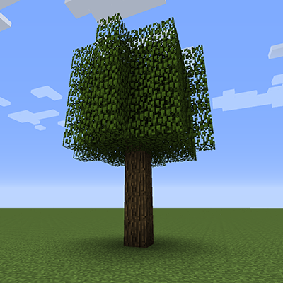
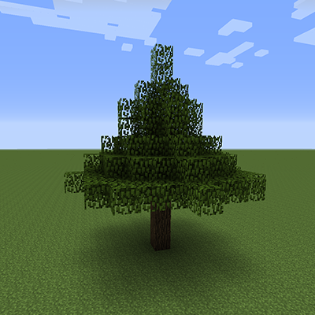
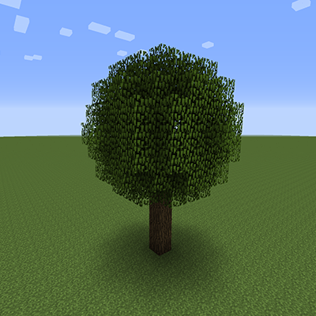

Objective
For lab 5, you will work more on orienting ourselves in Minecraft's 3D world. You'll do this by creating several different tree-growing blocks, where each tree has a characteristic shape: cube, cylinder, cone, and sphere. You should be able to easily finish the cube-shaped tree for this lab, and the cylinder-, cone- and sphere-shaped trees are left to you as extra credit.
Notes
Each tree “seed” block has a specialized constructor:

public TreeCubeBlock (Material material, int baseHeight, int size) material: The material of the block baseHeight: The height of the bare trunk to the bottom of the tree leaves size: The width, height and depth of the tree leaves
public TreeCylinderBlock (Material material, int baseHeight, int height, int radius) material: The material of the block baseHeight: The height of the bare trunk to the bottom of the tree leaves height: The height of the tree leaves radius: The radius of the tree leaves
public TreeConeBlock (Material material, int baseHeight, int height, int baseRadius) material: The material of the block baseHeight: The height of the bare trunk to the bottom of the tree leaves height: The height of the tree leaves baseRadius: The radius of the tree leaves at the bottom
public TreeSphereBlock (Material material, int baseHeight, int radius) material: The material of the block baseHeight: The height of the bare trunk to the bottom of the tree leaves radius: The radius of the tree leaves
Trees will be made out of two types of blocks: log and leaves
The Blocks.log blocks make up the trunk of the tree, and
Blocks.leaves make up the body (leaves) of the tree.
The trunks of the trees are all similar
Each tree trunk will extend from the ground up to the middle of the leaves. This is actually important because Minecraft leaves blocks have an interesting property:
Leaf blocks start to disappear over time the further they are from a log block
Blocks.leaves slowly disappear the further they are from a Blocks.log type of block. This ends up making trees look more organic, but might surprise you if you're not expecting it.
Tree seed blocks will use the following already-supplied textures:
- tree_cube_block
- tree_cylinder_block
- tree_cone_block
- tree_sphere_block
Trees grow up immediately, so you will implement the onBlockAdded()
method
public void onBlockAdded (World world, int locX, int locY, int locZ) { ... }
The code in this method executes as soon as the block is placed in the Minecraft world.
Use the world.setBlock() method to place tree blocks
void world.setBlock (int locX, int locY, int locZ, Block blockType);
Your code inside onBlockAdded() will set blocks at the coordinates [locX,
locY, locZ]. The entire job in this lab is to put the right blocks at the right coordinates.
Remember that in Minecraft, the horizon stretches out in X and in Z, and the Y coordinate
goes up.
Tasks
This lab has four parts. You should be able to easily complete the cube-tree growing block in this lab. Parts 2–4 are increasingly more difficult, but should be achievable with a bit of thinking. The challenge for all of these is working out the algorithm and mathematics needed to accomplish this.
Part 1 — Create a tree-cube growing block
For this task, you'll be creating a tree where the leaves form a cube (all sides square), where the length/depth/height of each side is given by the size parameter.
- Create a new class
TreeCubeBlock. As usual, this will extendBlock. - Add a constructor for
TreeCubeBlock. This will take the parameters(Material material, int baseHeight, int size). In the constructor you'll need to call the superclass with thematerialparameter as usual. - The
TreeCubeBlockwill have a single method:onBlockAdded. In theonBlockAddedmethod, you'll be callingworld.setBlock()to place the trunk and leaves. Because the trunk should extend from the ground up into the middle of the volume of leaves, it's easier to place all of the leaves first. - Implement the code to place leaves in a cube shape,
baseHeightoff the ground, and with a side length ofsize. - Now grow a trunk from the ground up to the middle of the body of leaves. Remember
that the trunk is built out of
Blocks.log. - Finally, we'll need to add our new custom tree-cube growing block to your inventory
of custom blocks. Go to the
BlocksModuleclass, and add the newTreeCubeBlock. Remember to use the "tree_cube_block" texture for the block, and create an instance with a reasonable set of constructor parameters to create a reasonably-sized cube tree.
Part 2 — Create a tree-cylinder growing block
Now for something a little more difficult: creating a tree in the shape of a cylinder. Use the constructor given above in the notes section above.
The trick to this part (and the next two parts) is to consider that a cone, cylinder and sphere all fit inside a box of some size. You will iterate over all blocks in the world just as you did for the cube tree, but then will need to determine whether each block is inside or outside of the cylinder. If it's inside (or on the surface of) the cylinder, then set it to a leaf block. If a block is outside the cylinder, then don't set it.
How do you determine if each block is inside the cylinder? That's the puzzle. Don't just sit at the computer trying to code it out — get out a pencil and paper and work it out there first. If you're allowed to work in groups, put your heads together to figure it out.
All points in a circle are closer to the center than the radius of that circle.
Hint: remember the Pythagorean theorem?
Here's another hint: you can think of a cylinder as a stack of circles.
Except for the body of the onBlockAdded() method, all of the steps for this
task are similar to the ones for the tree-cube block.
Part 3 — Create a tree-sphere growing block
Now try to figure out how to create a tree with leaves in the shape of a sphere. This one is either easier or harder than the cylinder tree, depending on how you think about it. Use the constructor given above in the notes section above.
Hint: all points inside a sphere are closer to the center than the radius of that sphere.
Hint: the Pythagorean theorem works in three dimensions too!
Part 4 — Create a tree-cone growing block
Is a cone-tree easier or harder than a sphere tree? I don't know, but I think it might be a bit harder. Use the constructor given above in the notes.
Hint: a cone is like a cylinder, except that the radius decreases to zero as you go toward to the top. You'll probably want to copy and tweak your cylinder code, and modify the radius in your loops.